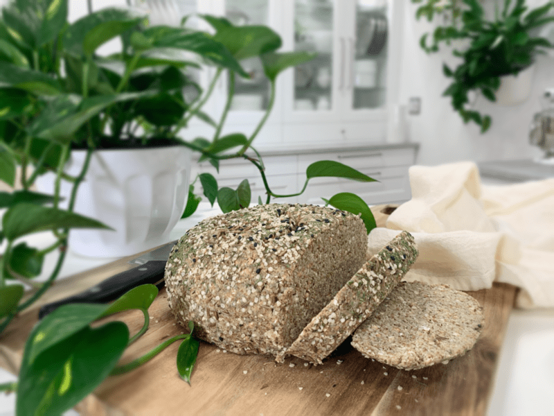
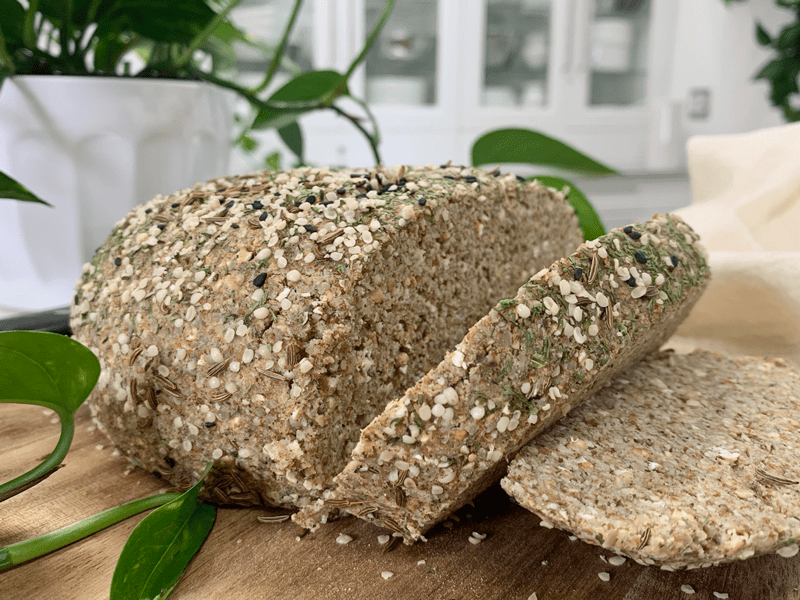
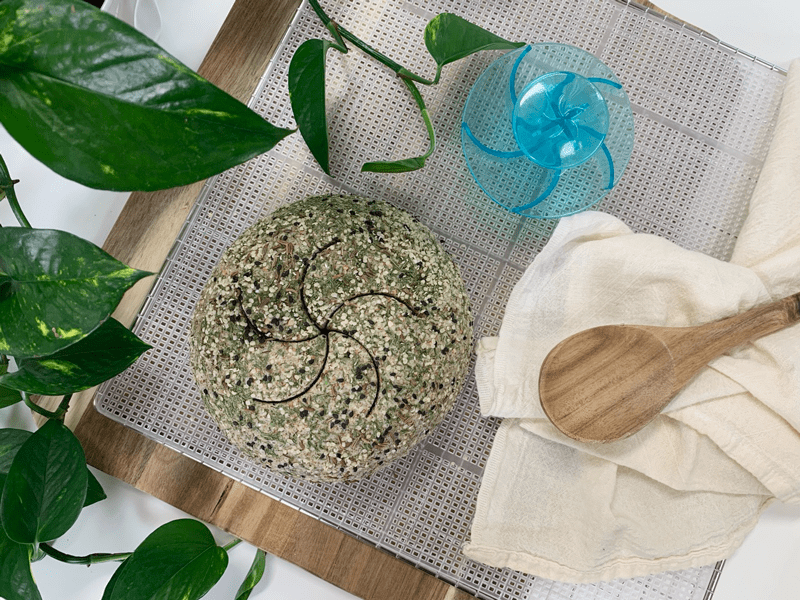
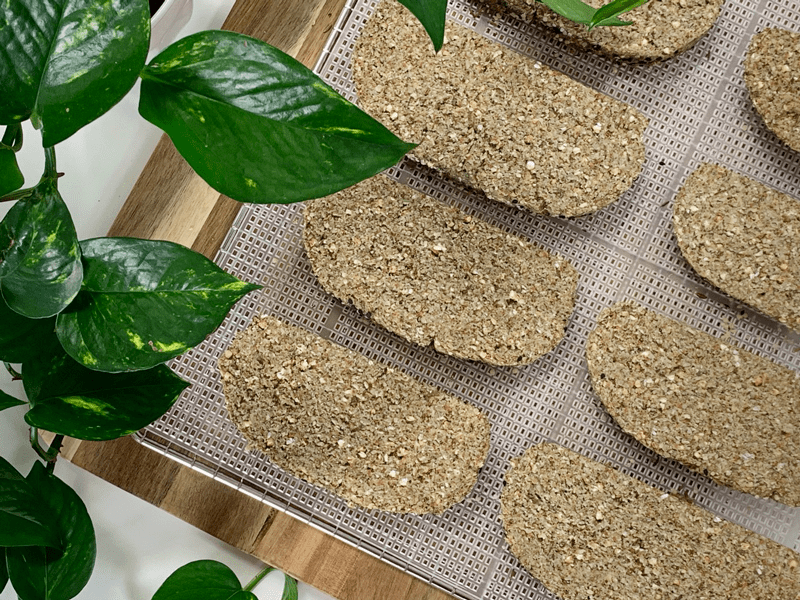
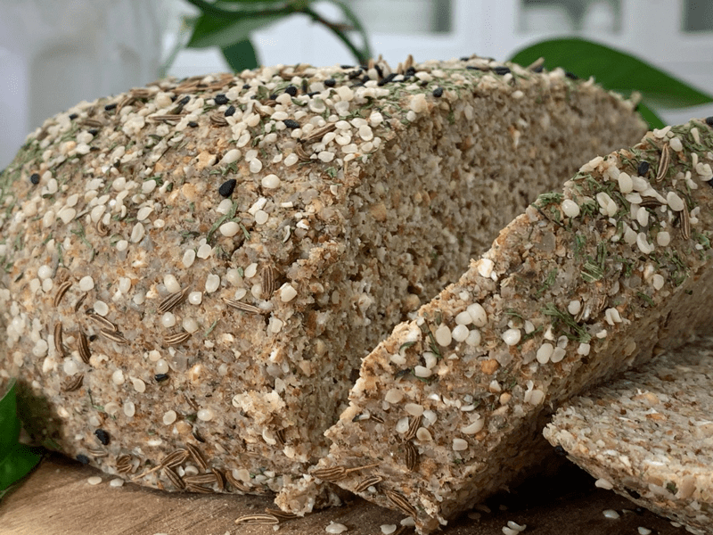

Caraway and Dill Bread
– raw, vegan, gluten-free –
Caraway seeds are tiny—about 2 mm long—and they come with five pale ridges. They’re also known by a bunch of other names like meridian fennel, Persian fennel, wild cumin, and Roman cumin. Whew, talk about confusing! Caraway, fennel, cumin—who knew the spice rack was such a family reunion? Good things do come in small packages, though. Caraway seeds contain over 50 healing compounds, and research shows they can tackle a surprising range of health issues.

One thing that really stood out to me about caraway is its amazing effect on digestion. I always assumed caraway was just for savory dishes, but turns out it’s also used in desserts to help speed digestion after a heavy, fatty meal. It helps relax the muscles involved in digestion, and ladies, listen up—it can soothe uterine muscles, making it a natural aid for menstrual cramps.
Back to digestion (I could talk about this all day). Studies suggest that a gentle stomach massage with a little caraway oil can ease minor gas and bloating. Not that I have a problem with that—after all, I’m a lady, for Pete’s sake! (Source: my research on digestion, not a confirmation of my gender! Hehe.) Caraway also pairs beautifully with dill, fennel, anise, basil, cardamom, and jasmine. Fun fact: dill itself helps with digestion and flatulence too. Isn’t that fascinating? I’m excited to experiment with more flavor combos soon.
Caraway also has other cool perks: added to rye bread, it helps break down starch; in sauerkraut, it banishes that sulfur smell (and yes, again, helps with flatulence). Is this as fascinating to you as it is to me?

When you buy caraway, I recommend getting the whole seeds and grinding them fresh as needed. This releases the spice’s essential oils and spreads flavor evenly through your recipe. That’s why I use both whole and ground caraway in this recipe—to make sure the flavor infuses all over the loaf without cooking. Plus, whole seeds can last for years when stored properly.
If you’re new to caraway (and I bet there are a few of you out there), don’t be shy. I didn’t really start using this spice until my late thirties, and now I’m hooked. If that’s you, give it a try—new flavors and spices open up a whole new delicious world, and I’m here cheering you on! Caraway has an earthy, fennel-like taste with a nutty aftertaste—much easier to type than to say! So, go ahead and enjoy your flavorful adventures. blessings, amie sue
 Ingredients:
Ingredients:
yields 1 loaf (7.5″ round x 3″ high)
Dry Ingredients:
Wet Ingredients:
- 2 cups (405 g) packed, moist almond pulp
- 1 cup (8 oz) water
- 2 Tbsp (1 oz) lemon juice
- 3 Tbsp (3 oz) maple syrup or 1/4 tsp stevia
Preparation:
- Place the sunflower seeds and oats in the food processor, processing until it reaches a flour consistency.
- Do not use wet seeds and oats in this recipe. Make sure they are dehydrated first. Otherwise, the bread will be too soggy.
- If you are unable to consume oats, you could replace it with ground buckwheat or add more sunflower seeds to the recipe.
- Add ground flax, psyllium, dried dill, ground caraway, caraway seeds, and salt. Pulse till mixed. Set aside while you mix the wet ingredients.
- If you don’t favor the flavor of flax, you can use the same measurement of ground chia seeds.
- I don’t have a replacement for the psyllium husks; it helps to give the bread that spongy feeling. You can opt to leave it out, but it will change the texture a bit.
- In a large-sized bowl, combine almond pulp, water, lemon juice, and sweetener. With your hands, mix.
- Almond pulp… I use the almond pulp in most of my bread recipes because it helps lighten the texture. You can use the whole nuts ground to a small meal, but the bread will be much heavier.
- The sweetener is up to you, but I don’t suggest omitting it. It adds a balance to the overall flavor of the bread. You can use just about any sweetener that you desire.
- Add the dry ingredients to the bowl and hand mix until well incorporated. Depending on how moist your almond pulp is, you may need to add water, so the dough sticks together nicely. If you do, do this by adding 1 Tbsp at a time.
- Shape the loaf. I used a medium-sized mixing bowl that had a nice roundness to the bottom of the bowl. I lightly greased the bowl with coconut oil and packed the dough mix into the bowl. I then used a lid that was smaller than the bowl diameter to use to press down on evenly and firmly. See the photo below.
- Pop the dough out of the container and place flat-side down on the mesh sheet that comes with the dehydrator.
- Dehydrate at 145 degrees (F) for 1 hour. This will create a crust on the outside.
- Remove the bread and on a cutting board, cut the bread into 1/2 – 1″ thick slices.
- I cleaned the knife in between cuts, so make the cut nice and clean. Don’t saw back and forth; this will cause the edges to crumble.
- Lay each slice back onto the mesh sheet.
- Decrease the temperature to 115 degrees (F) and continue to dehydrate for 6-10 hours.
- This time will vary due to the climate, the humidity in your home, and how full the dehydrator is.
- Keep an eye on the bread and remove it when it reaches the texture that you desire.
- Shelf life and storage: My recommendation would be to store this bread in an air-tight container, in the fridge, for 3-5 days.
- The more moisture that is left in your bread, the shorter the shelf life. Therefore, shelf life will vary with your drying technique. Whenever I make this bread, it never lasts long enough to spoil.
- Keep in mind, even though this bread freezes well, the whole purpose of eating a raw diet is to eat foods at their peak of freshness, so don’t expect this bread to have an extended expiration date.
The Institute of Culinary Ingredients™
- To learn more about maple syrup by clicking (here).
- What is Himalayan pink salt, and does it matter? Click (here) to read more about it.
- Are oats gluten-free? Yes, read more about that (here).
- Are oats raw? Yes, they can be found. Click (here) to learn more.
- Do I need to soak and dehydrate oats? Not required but recommended. Click (here) to see why.
- Learn how to grind your own flaxseeds for ultimate freshness and nutrition. Click (here).
- How does psyllium work in a recipe? Learn more (here).
Culinary Explanations:
- Why do I start the dehydrator at 145 degrees (F)? Click (here) to learn the reason behind this.
- When working with fresh ingredients, it is essential to taste test as you build a recipe. Learn why (here).
- Don’t own a dehydrator? Learn how to use your oven (here). I do, however honestly believe that it is a worthwhile investment. Click (here) to learn what I use.
-

-

-
Once an outer crust has formed, slice into 1″ thick pieces, lay flat and dry at 115 degrees (F) for roughly 4 hours.
-

-
Would you look at that texture?!
© AmieSue.com